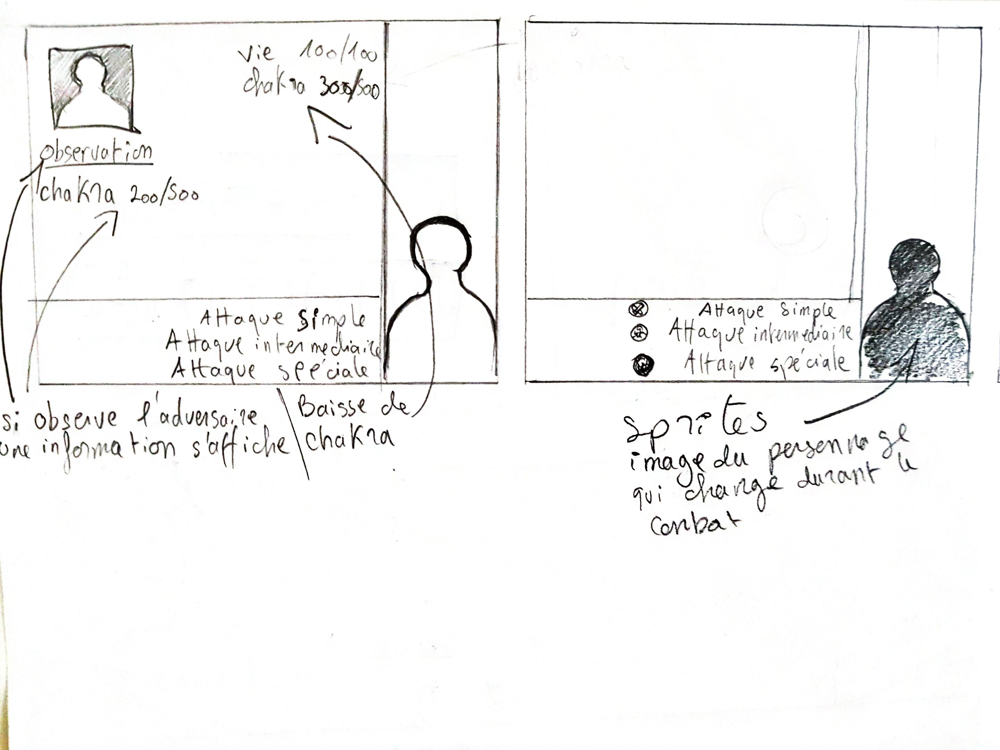
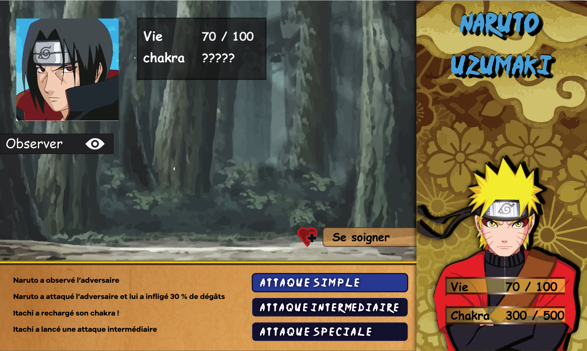

DuelNinja
Dans le cadre de la formation nous devions présenter un projet lors d'un after-work annuel organisé par la formation. Mes collaborateurs et moi avons imaginé un jeu de rôle stratégique tour par tour se basant sur les premières versions du jeux POkemon. Toutes les fonctionnalités ainsi que les décors ont été créé par nous même sauf les background pour les map.
Voir le projetTechnologie utiliseé
Détails du projet
Scrum et Maquettage
Pour ce projet nous avons commencé par utiliser la méthode agile Scrum qui consiste par commencer à définir le projet dans les grandes lignes puis à détailler les fonctionnalités en commençant par les plus importantes. A la suite de cela nous avons établii un User-flow sur papier pour nous aider à visualer les differentes parties du jeu. Après cela nous avons commencé à develloper le projet en ajoutant les fonctionnalités une par une.
User-flow
Storyboard
Storyboard2
Storyboard décrivant les differentes vues de l'utilisateur allant de la page d'Accueil à la page ou se déroule combat.
Maquette
Maquette 1
Maquette final

Fonctionnalités
L'écran eest divisé en trois partie:
- Le bloc adversaire situé en haut à gauche qui est constitué de toutes les infos qui lui correspondes.
- Le bloc joueur situé à droite qui est constitué de toutes les actions qui sont possibles par le joueur ( toutes les attaques, les soins ainsi que les actions qui permettes l'identification du joueur adverse).
- La console dans laquelle on retouve les actions éffectuées par l'adversaire et le joueur.
Conclusion
Ce projet m'a permis de mettre réellement en pratique mes connaisances en JavaScript en effectuant toutes les fonctionnalités sans utiliser aucune librairie. Cela m'a permis aussi de minitier à la programation orientée objet.